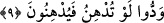
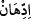
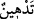
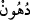

Yukarıda yer alan gerçekler senin tarafından anlaşıldığına göre onlar tarafından
yapılan “yakamızı bırak ki, biz de senin yakanı bırakalım” şeklindeki çağrılarına boyun
eğmemeye devam et. Burada Allah, Peygamber Efendimiz’e kavmine karşı işi sıkı
tutmasını emretmekte, böylece kâfirlerin sayılarının çok, müslümanların sayılarının az
olmalarına rağmen onun kalbini takviye etmektedir. Çünkü bu sûre Kuran’da ilk inen
sûrelerdendir. Âyet-i kerîme öte yandan âsî olan kimseye itâatın “isyan”, tağî/azgın
kişiye uymanın “tuğyan”/azgınlık anlamına geldiğini göstermektedir.
9. Onlar isterler ki, sen yumuşak davranasın da onlar da sana yumuşak
davransınlar.
“Onlar isterler ki, sen yumuşak davranasın da onlar da sana yumuşak
davransınlar.” Bu âyet-i kerîmede yer alan “lev” temennî ifâde etmektedir. Aynı âyette
geçen “ /iddihân” tıpkı “/tedhîn” gibidir. Bu iki kelime, “ /dühün”
masdarından türemiştir. Fakat kelime yağ anlamına gelen dühünden türemekle birlikte
“yumuşaklık ve ciddiyetin bir yana bırakılması” anlamına kullanılmıştır. “Dühün”
kelimesi yumuşaklığa, kolaylığa ve azlığa delâlet etmektedir.
Tâcu’l-masâdir’de kelimenin “dalkavukluk etmek” anlamına geldiği belirtilmektedir.
Buna göre âyetin mânâsı; Onlar senin kendilerine bâzı hususlarda ve dâveti terk
noktasında yumuşak davranmanı ve hoşgörülü olmanı isterler. Sen onlara yumuşak
davrandığında onlar da seni kınamayı ve sana sataşmayı terkederek yumuşak
davranacaklarını ifâde ederler.
Kâşifî şöyle der: Mekke müşriklerinin seni ataların dinine dâvet etmelerine izin
verme. Onlara yumuşaklık göstermeni ve şirk konusunda serzenişte bulunmamanı
isterler. Böylece onlar da sana yumuşak davranır ve senin dînine sitem etmez, dînini
kınamazlar.
Âyetin başındaki “fâ” harfi, “tüdhinu” fiiline atıf harfidir. Böylece “yüdhinûn”
kelimesi “lev” kelimesinin kapsamına dâhil olur. Bu nedenle “yüdhinûn” fiili,
temennînin cevabı olarak nun harfinin düşmesiyle mansup olmamıştır. Bu fiil, gelecek
zaman ifâde etmektedir.
“Yüdhinûn” fiilinin başındaki “fa” atıf harfi olabileceği gibi sebebiye de olabilir. Bu
takdirde fiil “tüdhinu” fiilinin sonucu olmuş olur. Fiilin zamanı, gelecek zaman
olabileceği gibi şimdiki zaman da olabilir. Bu takdirde mânâ; “Onlar senin yumuşak
davranmanı isterler. Onlar şu anda senin yumuşak davranmanı umarak sana karşı
yumuşak davranıyorlar” demek olur. Bu durumda tesebbüb temennî anlamında
kullanılmış ve bir mübtedâ takdir edilmiş olur. Çünkü böyle bir takdir yapmazsak,
temennî kapsamındaki tesebbüb gereği fiilin mansup olması gerekirdi.